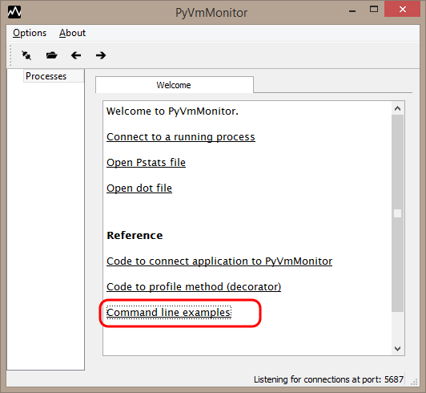

Attach to running CPython program and use Yappi to do a profile session
Command line parameters for PyVmMonitor
API to use PyVmMonitor programatically
PyVmMonitor preferences (theme, listening port, editor font, etc.)
Copyright 2014-2017 - Brainwy Software Ltda.
Hosted on GitHub Pages - Theme by orderedlist
It's possible to use the PyVmMonitor command line to run a Python script attached to the PyVmMonitor from the start.
The welcome page has a link which will show the command line to be used for your particular installation of PyVmMonitor.
When running in this mode, the command line will start the UI (if needed), start the yappi profiler, run the user code and show the profile results in PyVmMonitor when the run is finished.
python install_location/public_api/pyvmmonitor --profile=yappi file_to_profile.py
When running in this mode, the command line will start the UI (if needed), start the profiler using cProfile or profile, run the user code and show the profile results in PyVmMonitor when the run is finished.
python install_location/public_api/pyvmmonitor --profile=lsprof file_to_profile.py
In this mode the script will be run with the profiler connected. It will show the live view and the possibility of starting yappi later on. In this mode, using the API will show the results on the connected PyVmMonitor.
python install_location/public_api/pyvmmonitor file_to_profile.py